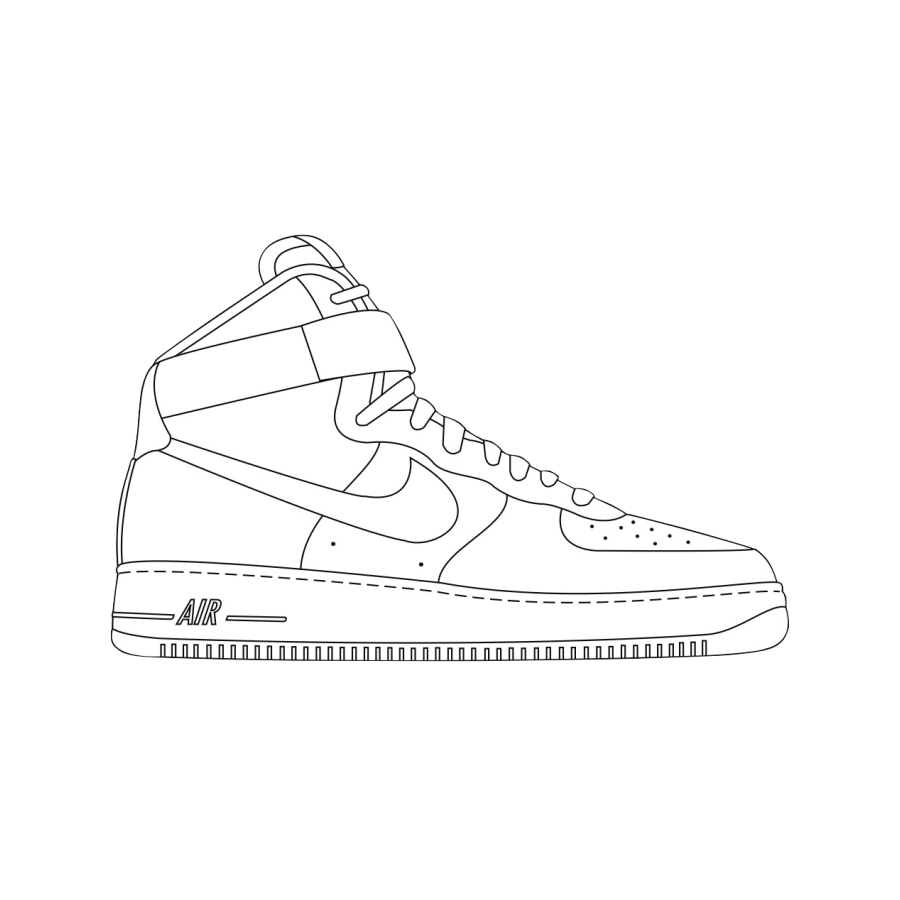

outline
laces
strap

eyestay/backtab

midsole/lining
outsole
foxing/top
tongue/vamp
quarter
swoosh
PICSTOKICKS is a Python program that makes a custom shoe using the most popular colors in an image. Check out the code here.
The input image is searched for the most frequently colors in an RGB format. These colors are then added to a list ordered from most frequent to least frequent.
There are 9 layers that make up the actual shoe and another layer for the black outline. Using a Python image library, each layer is recolored to match one of the colors in the list created from the source image.
outline
laces
strap
eyestay/backtab
midsole/lining
outsole
foxing/top
tongue/vamp
quarter
swoosh
Once each layer is colored, all 10 images are concatenated to form the entire shoe. A custom name can also be added to the final result using another method in the Python image library.
An original project by Sahas Ramesh